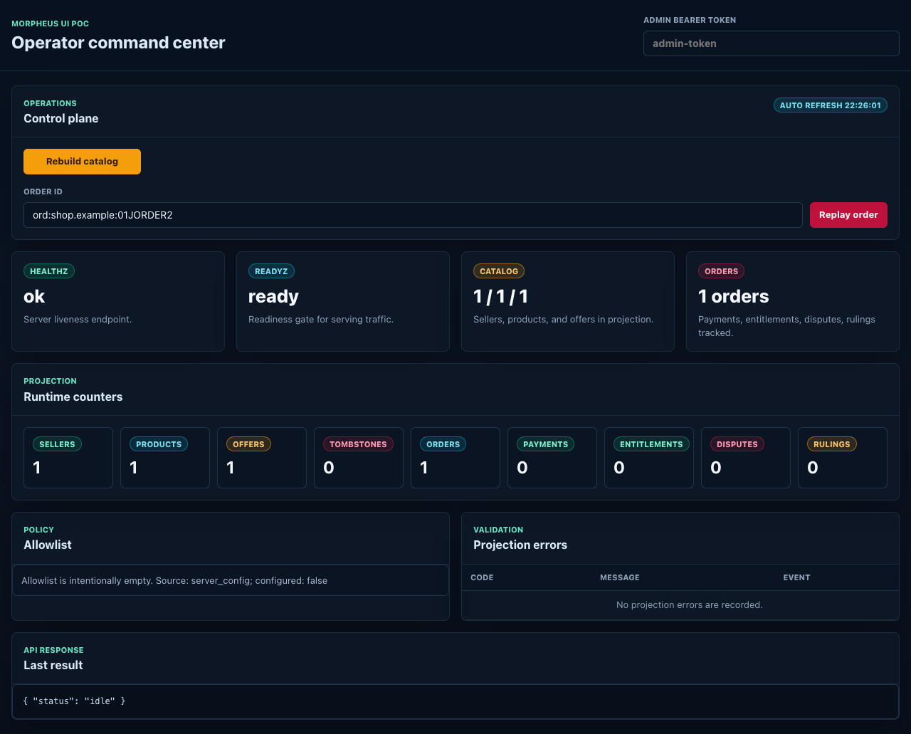
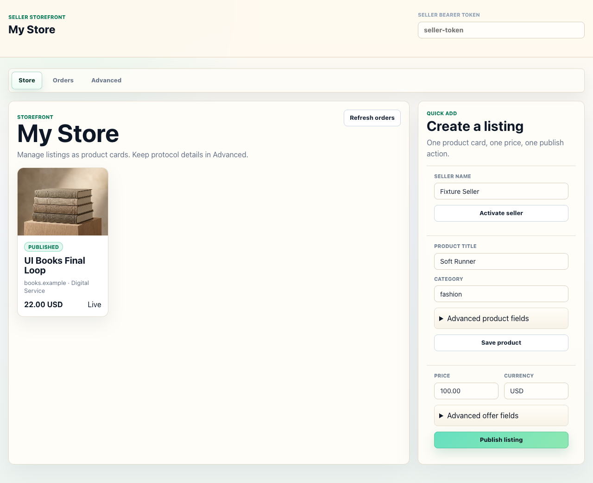
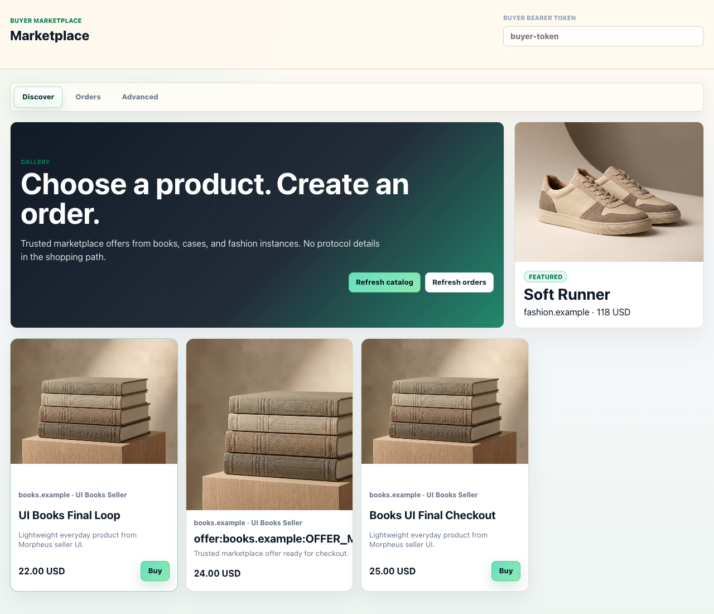

Операционный кабинет
Проверить health/readiness, tokens, allowlist, projection counters, validation stream, catalog rebuild и order replay.
Developer setup
Это окружение поднимает books, cases и fashion instances с отдельными Synapse, Postgres и Morpheus runtime. Оно нужно, чтобы разработчик видел весь путь: публикация товара, federation catalog visibility, покупка, order room, seller lifecycle, admin projections и диагностика ошибок.
Open by role
Проверить health/readiness, tokens, allowlist, projection counters, validation stream, catalog rebuild и order replay.
Announce seller, publish product/offer, увидеть order queue, принять order, провести payment/entitlement lifecycle и снять offer.
Обновить catalog, выбрать offer, создать order, увидеть настоящий backend-owned Matrix room id и отследить/cancel order.
Понять контейнеры, команды запуска, expected state, CLI/API сценарии, federation smoke и диагностику проблем.
Purpose
`make e2e-three-synapse` поднимает локальную federation-сеть, которая не является чистым mock-ом: seller writes проходят через Morpheus API, Matrix publisher, Synapse, Application Service ingest, protocol validation и Postgres projections. При этом payment adapter в PoC остаётся `mock`, а remote catalog visibility сейчас строится trusted Morpheus peer indexer-ом по API. Order flow использует настоящие backend-owned Matrix order rooms.
`books.example`, `cases.example`, `fashion.example` имеют разные configs, DB, Synapse homeserver и Morpheus server.
Контейнеры общаются по service DNS. Federation domains резолвятся не в Synapse, а в nginx TLS proxy.
Скрипт seed-ит 14 sellers, 28 products, 28 offers и один cross-instance completed order.
Один и тот же backend доступен через `/ui/*`, HTTP endpoints и `morpheus` CLI.
Runbook
make e2e-three-synapseКоманда генерирует Synapse configs и local CA, собирает Morpheus image, поднимает контейнеры, ждёт readiness, проверяет federation smoke, запускает demo seed и сверяет projection counts.
curl -fsS http://127.0.0.1:18081/readyz
curl -fsS http://127.0.0.1:18082/readyz
curl -fsS http://127.0.0.1:18083/readyzКаждый endpoint должен вернуть `{"status":"ready"}`.
make e2e-three-synapse-downЭто делает `docker compose -f docker-compose.e2e.yml down -v` и удаляет Synapse sqlite файлы из `.local/e2e/synapse-*`. Docker build cache при этом не должен удаляться.
Docker topology
| Группа | Контейнеры | Назначение | Порты / DNS |
|---|---|---|---|
| Postgres | postgres-books, postgres-cases, postgres-fashion |
Отдельная база Morpheus для raw events, idempotency keys и projections каждого instance. | Внутри сети: service DNS. DB/user/password: morpheus. |
| Synapse | synapse-books, synapse-cases, synapse-fashion |
Matrix homeserver для local AS user, catalog rooms, order rooms и federation traffic. | Host: 18008, 18009, 18010 -> container 8008. |
| Federation proxy | federation-books, federation-cases, federation-fashion |
nginx TLS endpoint на 8448 для Matrix federation, с сертификатами от local CA. |
Network aliases: books.example, cases.example, fashion.example. |
| Morpheus | morpheus-books, morpheus-cases, morpheus-fashion |
Axum API, UI, Matrix publisher, AS ingest, validators, projections, remote catalog indexer. | Host: 18081, 18082, 18083 -> container 8080. |
http://127.0.0.1:18081/ui/admin
http://127.0.0.1:18081/ui/seller
http://127.0.0.1:18081/ui/buyer
http://127.0.0.1:18082/ui/admin
http://127.0.0.1:18082/ui/seller
http://127.0.0.1:18082/ui/buyer
http://127.0.0.1:18083/ui/admin
http://127.0.0.1:18083/ui/seller
http://127.0.0.1:18083/ui/buyer
Expected state
Команда заканчивается строками `federation smoke ok (...)`, `demo seed ok`, `three-synapse e2e ok`.
В каждом Postgres ожидается 14 sellers, 28 products, 28 offers. Это сумма local seed и trusted remote catalog index.
`fashion.example` содержит seeded order/payment/entitlement для покупки fashion offer buyer-ом с `books.example`.
Admin показывает health/allowlist/counters/events, seller показывает storefront/orders, buyer показывает catalog grid и orders.
Browser surfaces
Все UI используют bearer token из input-а и хранят его только в `localStorage`. Для E2E placeholders: `admin-token`, `seller-token`, `buyer-token`. UI не выдаёт secrets с backend-а.



| Роль | URL | Token | Что проверить |
|---|---|---|---|
| Admin | /ui/admin |
admin-token |
Health, readiness, config JSON, allowlist, catalog/order/payment/entitlement counters, validation stream. |
| Seller | /ui/seller |
seller-token |
Storefront cards, quick add listing, seller orders, Accept -> Intent -> Capture -> Grant -> Complete. |
| Buyer | /ui/buyer |
buyer-token |
28 seeded offers, unique product images, checkout sheet, order tracking, cancel while valid. |
UI customer journey
http://127.0.0.1:18081/ui/seller.http://127.0.0.1:18081/ui/buyer./ui/buyer и нажать `Refresh catalog`./ui/admin, нажать refresh/rebuild при необходимости и проверить catalog counters/events.CLI journey
CLI JSON-first. Глобальные флаги: `--server-url`, `--token`, `--pretty`. Если `--token` не задан, CLI берёт `MORPHEUS_ADMIN_TOKEN`, `MORPHEUS_SELLER_TOKEN`, `MORPHEUS_BUYER_TOKEN` в зависимости от команды.
morpheus admin health
morpheus admin config
morpheus admin allowlist
morpheus admin projections
morpheus admin events
morpheus admin rooms bootstrap
morpheus admin catalog rebuild
morpheus admin order replay ORD_ID
morpheus seller announce --json '{...}'
morpheus seller product upsert --json '{...}'
morpheus seller offer upsert --json '{...}'
morpheus seller offer withdraw OFFER_ID --json '{...}'
morpheus seller orders list
morpheus seller order accept ORD_ID --json '{...}'
morpheus seller payment intent ORD_ID --json '{...}'
morpheus seller payment capture ORD_ID --json '{...}'
morpheus seller entitlement grant ORD_ID --json '{...}'
morpheus seller order complete ORD_ID --json '{...}'
morpheus buyer catalog sellers
morpheus buyer catalog products
morpheus buyer catalog offers
morpheus buyer order create --json '{...}'
morpheus buyer order cancel ORD_ID --json '{...}'
morpheus buyer order list
morpheus buyer order show ORD_ID
morpheus demo seed --scenario three-retail-instances --config-dir config/e2e
morpheus db migrate --database-url ... --database-kind postgres
morpheus conformance run
export MORPHEUS_ADMIN_TOKEN=admin-token
export MORPHEUS_SELLER_TOKEN=seller-token
export MORPHEUS_BUYER_TOKEN=buyer-token
SERVER=http://127.0.0.1:18081
cargo run -p morpheus-cli -- --server-url "$SERVER" seller announce --json '{
"seller_id":"seller:books.example:UISELLER01",
"display_name":"UI Books Seller",
"legal_profile_ref":"https://books.example/legal",
"terms_ref":"https://books.example/terms",
"terms_hash":"sha256:aaaaaaaaaaaaaaaaaaaaaaaaaaaaaaaaaaaaaaaaaaaaaaaaaaaaaaaaaaaaaaaa",
"supported_payment_adapters":["mock"],
"supported_entitlement_types":["external_entitlement"]
}'
cargo run -p morpheus-cli -- --server-url "$SERVER" seller product upsert --json '{
"seller_id":"seller:books.example:UISELLER01",
"product_id":"prod:books.example:UIPROD01",
"revision":1,
"title":"CLI Digital Product",
"description":"Access delivered externally",
"kind":"digital_service",
"categories":["software"],
"tags":["demo"],
"terms_hash":"sha256:aaaaaaaaaaaaaaaaaaaaaaaaaaaaaaaaaaaaaaaaaaaaaaaaaaaaaaaaaaaaaaaa"
}'
cargo run -p morpheus-cli -- --server-url "$SERVER" seller offer upsert --json '{
"seller_id":"seller:books.example:UISELLER01",
"product_id":"prod:books.example:UIPROD01",
"offer_id":"offer:books.example:UIOFFER01",
"revision":1,
"price":{"amount":"100.00","currency":"USD"},
"payment_capture_policy":"before_entitlement",
"seller_terms_hash":"sha256:1111111111111111111111111111111111111111111111111111111111111111",
"offer_terms_hash":"sha256:2222222222222222222222222222222222222222222222222222222222222222",
"entitlement_type":"external_entitlement",
"availability_mode":"unlimited"
}'Дальше buyer создаёт order через `morpheus buyer order create --json '{...}'`. Если `order_room_alias_prefix` настроен, `room_id` в body не нужен: backend создаёт Matrix room и возвращает фактический `room_id`. Seller затем вызывает `seller order accept`, `seller payment intent`, `seller payment capture`, `seller entitlement grant`, `seller order complete`.
HTTP API journey
HTTP API использует role bearer tokens. Seller endpoints требуют `seller-token` и local seller actor. Buyer order endpoints требуют `buyer-token` и local customer actor. Admin endpoints требуют `admin-token`.
POST /api/v1/seller/announce
POST /api/v1/seller/products
POST /api/v1/seller/offers
POST /api/v1/seller/offers/{offer_id}/withdraw
GET /api/v1/catalog/sellers
GET /api/v1/catalog/products
GET /api/v1/catalog/offers
POST /api/v1/buyer/orders
GET /api/v1/buyer/orders
POST /api/v1/buyer/orders/{order_id}/cancel
GET /api/v1/seller/orders
POST /api/v1/seller/orders/{order_id}/accept
POST /api/v1/seller/orders/{order_id}/reject
POST /api/v1/seller/orders/{order_id}/payment-intent
POST /api/v1/seller/orders/{order_id}/payment-capture
POST /api/v1/seller/orders/{order_id}/entitlement-grant
POST /api/v1/seller/orders/{order_id}/complete
curl -fsS -X POST "$SERVER/api/v1/buyer/orders" \
-H "authorization: Bearer buyer-token" \
-H "content-type: application/json" \
-d '{
"customer_id":"customer:books.example:UICUST01",
"customer_display_name":"Fixture Customer",
"order_id":"ord:books.example:UIORDER01",
"seller_id":"seller:fashion.example:FASHIONSELLER01",
"offer_id":"offer:fashion.example:FASHIONOFFER0101",
"offer_revision":1,
"catalog_snapshot_id":"snap:fashion.example:FASHIONSNAP01",
"price":{"amount":"26.00","currency":"USD"},
"payment_adapter":"mock",
"payment_capture_policy":"before_entitlement",
"entitlement_type":"external_entitlement",
"seller_terms_hash":"sha256:1111111111111111111111111111111111111111111111111111111111111111",
"offer_terms_hash":"sha256:2222222222222222222222222222222222222222222222222222222222222222",
"arbiter_instance":"cases.example",
"arbiter_actor":"arbiter:cases.example:01JARBITER",
"arbitration_policy_id":"standard-digital-v1",
"arbitration_policy_version":"1",
"arbitration_window":"P14D",
"expires_at":"2026-05-06T10:30:00Z"
}'curl -fsS -H "authorization: Bearer admin-token" "$SERVER/admin/config"
curl -fsS -H "authorization: Bearer admin-token" "$SERVER/admin/allowlist"
curl -fsS -H "authorization: Bearer admin-token" "$SERVER/admin/projections/summary"
curl -fsS -X POST -H "authorization: Bearer admin-token" "$SERVER/admin/catalog/rebuild"Runtime internals
Troubleshooting
Первый build после cache-фича всё равно прогревает cache. Повторные build-и используют BuildKit cache mounts для Cargo registry/git/target. Cache сбрасывается `docker builder prune`, `docker system prune` или очисткой Docker Desktop.
Проверьте federation proxies, DNS aliases `books.example`, `cases.example`, `fashion.example`, TLS CA trust в Synapse и то, что remote AS users могут быть invited/joined.
Проверьте allowlist capabilities `catalog` и `indexing`, `morpheus_url` в config/e2e/*.toml, доступность peer Morpheus API из контейнера и `POST /admin/catalog/rebuild`.
401 обычно означает неверный bearer token для роли. 403 `ACTOR_FORBIDDEN` означает, что actor id не принадлежит local instance, например seller endpoint на books получил `seller:fashion.example:*`.